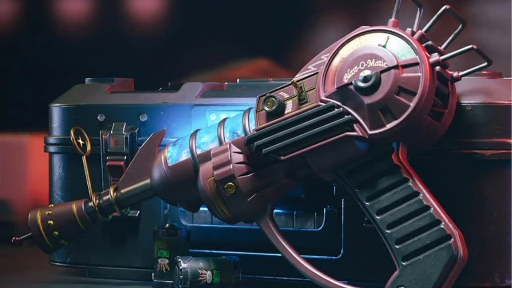

Las armas especiales en zombies han sido una grandes compañeras y amigas desde el inicio de la saga zombies desde CoD WW2, ya que nos han acompañado y ayudado en todo tipo de ocasiones, como las mas iconica en el juego y en el mundo Gamer en general, la Ray Gun es sin duda el arma insignea del juego y que mucha gente de la comunidad de zombies incluso fuera de ella la conocen, esto demuetra que un arma especial no solo es por el poder que tiene en el juego, sino por lo grande que puede a llegar a ser fuera de el.